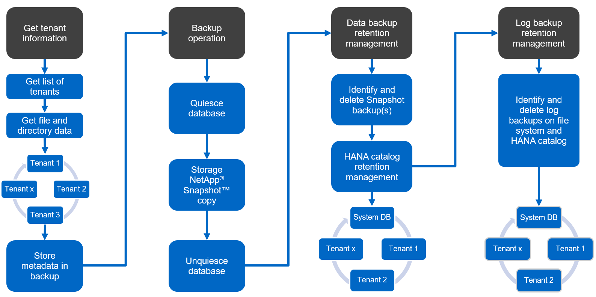
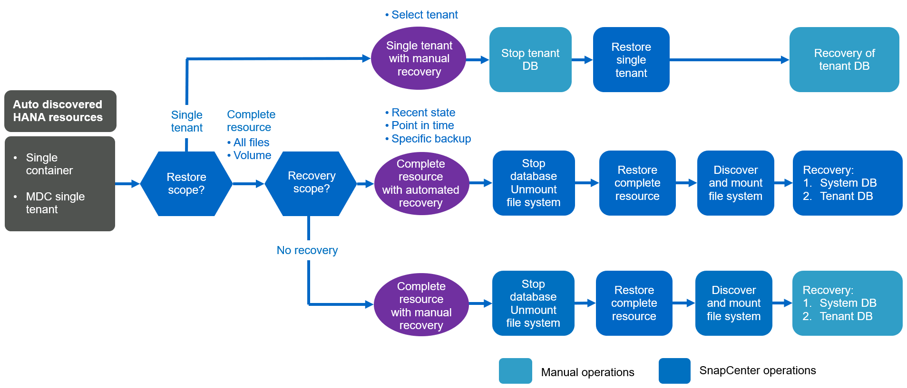

Best Practices
Best Practices
SnapCenter concepts and best practices
 Suggest changes
Suggest changes
This section describes SnapCenter concepts and best practices as they relate to SAP HANA resource configuration and deployment.
SAP HANA resource configuration options and concepts
With SnapCenter, SAP HANA database resource configuration can be performed with two different approaches.
-
Manual resource configuration. HANA resource and storage footprint information must be provided manually.
-
Automatic discovery of HANA resources. Automatic discovery simplifies the configuration of HANA databases in SnapCenter and enables automated restore and recovery.
It is important to understand that only HANA database resources in SnapCenter that have been automatically discovered are enabled for automated restore and recovery. HANA database resources that are configured manually in SnapCenter must be recovered manually after a restore operation in SnapCenter.
On the other hand, automatic discovery with SnapCenter is not supported for all HANA architectures and infrastructure configurations. Therefore, HANA landscapes might require a mixed approach in which some HANA systems (HANA multiple host systems) require manual resource configuration and all others can be configured using automatic discovery.
Automatic discovery and automated restore and recovery depend on the ability to execute OS commands on the database host. Examples of this are file system and storage footprint discovery, and unmount, mount, or LUN discovery operations. These operations are executed with the SnapCenter Linux plug-in, which is automatically deployed together with the HANA plug-in. Therefore, it is prerequisite to deploy the HANA plug-in on the database host to enable automatic discovery as well as automated restore and recovery. It is also possible to disable the auto discovery after the deployment of the HANA plug-in on the database host. In this instance, the resource will be a manually configured resource.
The following figure summarizes the dependencies. More details on the HANA deployment options are covered in the section “Deployment options for the SAP HANA plug-in.”

|
The HANA and Linux plug-ins are currently only available for Intel-based systems. If the HANA databases are running on IBM Power Systems, a central HANA plug-in host must be used. |
Supported HANA architectures for automatic discovery and automated recovery
With SnapCenter, automatic discovery and automated restore and recovery is supported for most HANA configurations with the exception that HANA multiple host systems require a manual configuration.
The following table shows supported HANA configurations for automatic discovery.
| HANA plug-in installed on: | HANA architecture | HANA system configuration | Infrastructure |
|---|---|---|---|
HANA database host |
Single host |
|
|
|
|
HANA MDC systems with multiple tenants are supported for automatic discovery, but not for automated restore and recovery with the current SnapCenter release. |
Supported HANA architectures for manual HANA resource configuration
Manual configuration of HANA resources is supported for all HANA architectures; however, it requires a central HANA plug-in host. The central plug-in host can be the SnapCenter server itself or a separate Linux or Windows host.
|
|
When the HANA plug-in is deployed on the HANA database host, by default, the resource is auto discovered. Auto discovery can be disabled for individual hosts, so that the plug-in can be deployed; for example, on a database host with activated HANA System Replication and a SnapCenter release < 4.6, where auto discovery is not supported. For more information, see the section “Disable auto discovery on the HANA plug-in host.” |
The following table shows supported HANA configurations for manual HANA resource configuration.
| HANA Plug-In installed on: | HANA architecture | HANA system configuration | Infrastructure |
|---|---|---|---|
Central plug-in host |
Single or multiple host |
|
|
Deployment options for the SAP HANA plug-in
The following figure shows the logical view and the communication between the SnapCenter Server and the SAP HANA databases.
The SnapCenter Server communicates through the SAP HANA plug-in with the SAP HANA databases. The SAP HANA plug-in uses the SAP HANA hdbsql client software to execute SQL commands to the SAP HANA databases. The SAP HANA hdbuserstore is used to provide the user credentials, the host name, and the port information to access the SAP HANA databases.
|
|
The SAP HANA plug-in and the SAP hdbsql client software, which include the hdbuserstore configuration tool, must be installed together on the same host. |
The host can be the SnapCenter Server itself, a separate central plug-in host, or the individual SAP HANA database hosts.
SnapCenter server high availability
SnapCenter can be set up in a two-node HA configuration. In such a configuration, a load balancer (for example, F5) is used in an active/passive mode using a virtual IP address pointing to the active SnapCenter host. The SnapCenter repository (the MySQL database) is replicated by SnapCenter between the two hosts so that the SnapCenter data is always in-sync.
SnapCenter server HA is not supported if the HANA plug-in is installed on the SnapCenter server. If you plan to set up SnapCenter in an HA configuration, do not install the HANA plug-in on the SnapCenter server. More details on SnapCenter HA can be found at this NetApp Knowledge Base page.
SnapCenter server as a central HANA plug-in host
The following figure shows a configuration in which the SnapCenter Server is used as a central plug-in host. The SAP HANA plug-in and the SAP hdbsql client software are installed on the SnapCenter Server.
Since the HANA plug-in can communicate with the managed HANA databases using the hdbclient through the network, you do not need to install any SnapCenter components on the individual HANA database hosts. SnapCenter can protect the HANA databases by using a central HANA plug-in host on which all userstore keys are configured for the managed databases.
On the other hand, enhanced workflow automation for automatic discovery, automation of restore and recovery, as well as SAP system refresh operations require SnapCenter components to be installed on the database host. When using a central HANA plug-in host, these features are not available.
Also, high availability of the SnapCenter server using the in-build HA feature cannot be used when the HANA plug-in is installed on the SnapCenter server. High availability can be achieved using VMware HA if the SnapCenter server is running in a VM within a VMware cluster.
Separate host as a central HANA plug-in host
The following figure shows a configuration in which a separate Linux host is used as a central plug-in host. In this case, the SAP HANA plug-in and the SAP hdbsql client software are installed on the Linux host.
|
|
The separate central plug-in host can also be a Windows host. |
The same restriction regarding feature availability described in the previous section also applies for a separate central plug-in host.
However, with this deployment option the SnapCenter server can be configured with the in-build HA functionality. The central plug-in host must also be HA, for example, by using a Linux cluster solution.
HANA plug-in deployed on individual HANA database hosts
The following figure shows a configuration in which the SAP HANA plug-in is installed on each SAP HANA database host.
When the HANA plug-in is installed on each individual HANA database host, all features, such as automatic discovery and automated restore and recovery, are available. Also, the SnapCenter server can be set up in an HA configuration.
Mixed HANA plug-in deployment
As discussed at the beginning of this section, some HANA system configurations, such as multiple-host systems, require a central plug-in host. Therefore, most SnapCenter configurations require a mixed deployment of the HANA plug-in.
NetApp recommends that you deploy the HANA plug-in on the HANA database host for all HANA system configurations that are supported for automatic discovery. Other HANA systems, such as multiple-host configurations, should be managed with a central HANA plug-in host.
The following two figures show mixed plug-in deployments either with the SnapCenter server or a separate Linux host as a central plug-in host. The only difference between these two deployments is the optional HA configuration.
Summary and recommendations
In general, NetApp recommends that you deploy the HANA plug-in on each SAP HANA host to enable all available SnapCenter HANA features and to enhance workflow automation.
|
|
The HANA and Linux plug-ins are currently only available for Intel- based systems. If the HANA databases are running on IBM Power Systems, a central HANA plug-in host must be used. |
For HANA configurations in which automatic discovery is not supported, such as HANA multiple-host configurations, an additional central HANA plug-in host must be configured. The central plug-in host can be the SnapCenter server if VMware HA can be leveraged for SnapCenter HA. If you plan to use the SnapCenter in-build HA capability, use a separate Linux plug-in host.
The following table summarizes the different deployment options.
| Deployment option | Dependencies |
|---|---|
Central HANA plug-in host |
Pros: |
Central HANA plug-in host |
Pros: |
Individual HANA plug-in host |
Pros: |
Data protection strategy
Before configuring SnapCenter and the SAP HANA plug-in, the data protection strategy must be defined based on the RTO and RPO requirements of the various SAP systems.
A common approach is to define system types such as production, development, test, or sandbox systems. All SAP systems of the same system type typically have the same data protection parameters.
The parameters that must be defined are:
-
How often should a Snapshot backup be executed?
-
How long should Snapshot copy backups be kept on the primary storage system?
-
How often should a block integrity check be executed?
-
Should the primary backups be replicated to an off-site backup site?
-
How long should the backups be kept at the off-site backup storage?
The following table shows an example of data protection parameters for the system type’s production, development, and test. For the production system, a high backup frequency has been defined, and the backups are replicated to an off-site backup site once per day. The test systems have lower requirements and no replication of the backups.
| Parameters | Production systems | Development systems | Test systems |
|---|---|---|---|
Backup frequency |
Every 4 hours |
Every 4 hours |
Every 4 hours |
Primary retention |
2 days |
2 days |
2 days |
Block integrity check |
Once per week |
Once per week |
No |
Replication to off-site backup site |
Once per day |
Once per day |
No |
Off-site backup retention |
2 weeks |
2 weeks |
Not applicable |
The following table shows the policies that must be configured for the data protection parameters.
| Parameters | PolicyLocalSnap | PolicyLocalSnapAndSnapVault | PolicyBlockIntegrityCheck |
|---|---|---|---|
Backup type |
Snapshot based |
Snapshot based |
File based |
Schedule frequency |
Hourly |
Daily |
Weekly |
Primary retention |
Count = 12 |
Count = 3 |
Count = 1 |
SnapVault replication |
No |
Yes |
Not applicable |
The policy LocalSnapshot is used for the production, development, and test systems to cover the local Snapshot backups with a retention of two days.
In the resource protection configuration, the schedule is defined differently for the system types:
-
Production. Schedule every 4 hours.
-
Development. Schedule every 4 hours.
-
Test. Schedule every 4 hours.
The policy LocalSnapAndSnapVault is used for the production and development systems to cover the daily replication to the off-site backup storage.
In the resource protection configuration, the schedule is defined for production and development:
-
Production. Schedule every day.
-
Development. Schedule every day.
The policy BlockIntegrityCheck is used for the production and development systems to cover the weekly block integrity check using a file-based backup.
In the resource protection configuration, the schedule is defined for production and development:
-
Production. Schedule every week.
-
Development. Schedule every week.
For each individual SAP HANA database that uses the off-site backup policy, a protection relationship must be configured on the storage layer. The protection relationship defines which volumes are replicated and the retention of backups at the off-site backup storage.
With our example, for each production and development system, a retention of two weeks is defined at the off-site backup storage.
|
|
In our example, protection policies and retention for SAP HANA database resources and non- data volume resources are not different. |
Backup operations
SAP introduced the support of Snapshot backups for MDC multiple tenant systems with HANA 2.0 SPS4. SnapCenter supports Snapshot backup operations of HANA MDC systems with multiple tenants. SnapCenter also supports two different restore operations of a HANA MDC system. You can either restore the complete system, the System DB and all tenants, or you can restore just a single tenant. There are some pre-requisites to enable SnapCenter to execute these operations.
In an MDC System, the tenant configuration is not necessarily static. Tenants can be added or tenants can be deleted. SnapCenter cannot rely on the configuration that is discovered when the HANA database is added to SnapCenter. SnapCenter must know which tenants are available at the point in time the backup operation is executed.
To enable a single tenant restore operation, SnapCenter must know which tenants are included in each Snapshot backup. In addition, it must know which files and directories belong to each tenant included in the Snapshot backup.
Therefore, with each backup operation, the first step in the workflow is to get the tenant information. This includes the tenant names and the corresponding file and directory information. This data must be stored in the Snapshot backup metadata in order to be able to support a single tenant restore operation. The next step is the Snapshot backup operation itself. This step includes the SQL command to trigger the HANA backup savepoint, the storage Snapshot backup, and the SQL command to close the Snapshot operation. By using the close command, the HANA database updates the backup catalog of the system DB and each tenant.
|
|
SAP does not support Snapshot backup operations for MDC systems when one or more tenants are stopped. |
For the retention management of data backups and the HANA backup catalog management, SnapCenter must execute the catalog delete operations for the system database and all tenant databases that were identified in the first step. In the same way for the log backups, the SnapCenter workflow must operate on each tenant that was part of the backup operation.
The following figure shows an overview of the backup workflow.

Backup workflow for Snapshot backups of the HANA database
SnapCenter backs up the SAP HANA database in the following sequence:
-
SnapCenter reads the list of tenants from the HANA database.
-
SnapCenter reads the files and directories for each tenant from the HANA database.
-
Tenant information is stored in the SnapCenter metadata for this backup operation.
-
SnapCenter triggers an SAP HANA global synchronized backup save point to create a consistent database image on the persistence layer.
For an SAP HANA MDC single or multiple tenant system, a synchronized global backup save point for the system database, and for each tenant database is created. -
SnapCenter creates storage Snapshot copies for all data volumes configured for the resource. In our example of a single-host HANA database, there is only one data volume. With an SAP HANA multiple-host database, there are multiple data volumes.
-
SnapCenter registers the storage Snapshot backup in the SAP HANA backup catalog.
-
SnapCenter deletes the SAP HANA backup save point.
-
SnapCenter starts a SnapVault or SnapMirror update for all configured data volumes in the resource.
This step is only executed if the selected policy includes a SnapVault or SnapMirror replication. -
SnapCenter deletes the storage Snapshot copies and the backup entries in its database as well as in the SAP HANA backup catalog based on the retention policy defined for backups at the primary storage. HANA backup catalog operations are done for the system database and all tenants.
If the backup is still available at the secondary storage, the SAP HANA catalog entry is not deleted. -
SnapCenter deletes all log backups on the file system and in the SAP HANA backup catalog that are older than the oldest data backup identified in the SAP HANA backup catalog. These operations are done for the system database and all tenants.
This step is only executed if log backup housekeeping is not disabled.
Backup workflow for block integrity check operations
SnapCenter executes the block integrity check in the following sequence:
-
SnapCenter reads the list of tenants from the HANA database.
-
SnapCenter triggers a file-based backup operation for the system database and each tenant.
-
SnapCenter deletes file-based backups in its database, on the file system, and in the SAP HANA backup catalog based on the retention policy defined for block integrity check operations. Backup deletion on the file system and HANA backup catalog operations are done for the system database and all tenants.
-
SnapCenter deletes all log backups on the file system and in the SAP HANA backup catalog that are older than the oldest data backup identified in the SAP HANA backup catalog. These operations are done for the system database and all tenants.
|
|
This step is only executed if log backup housekeeping is not disabled. |
Backup retention management and housekeeping of data and log backups
The data backup retention management and log backup housekeeping can be divided into five main areas, including retention management of:
-
Local backups at the primary storage
-
File-based backups
-
Backups at the secondary storage
-
Data backups in the SAP HANA backup catalog
-
Log backups in the SAP HANA backup catalog and the file system
The following figure provides an overview of the different workflows and the dependencies of each operation. The following sections describe the different operations in detail.
Retention management of local backups at the primary storage
SnapCenter handles the housekeeping of SAP HANA database backups and non-data volume backups by deleting Snapshot copies on the primary storage and in the SnapCenter repository according to a retention defined in the SnapCenter backup policy.
Retention management logic is executed with each backup workflow in SnapCenter.
|
|
Be aware that SnapCenter handles retention management individually for both scheduled and on-demand backups. |
Local backups at the primary storage can also be deleted manually in SnapCenter.
Retention management of file-based backups
SnapCenter handles the housekeeping of file-based backups by deleting the backups on the file system according to a retention defined in the SnapCenter backup policy.
Retention management logic is executed with each backup workflow in SnapCenter.
|
|
Be aware that SnapCenter handles retention management individually for scheduled or on-demand backups. |
Retention management of backups at the secondary storage
The retention management of backups at the secondary storage is handled by ONTAP based on the retention defined in the ONTAP protection relationship.
To synchronize these changes on the secondary storage in the SnapCenter repository, SnapCenter uses a scheduled cleanup job. This cleanup job synchronizes all secondary storage backups with the SnapCenter repository for all SnapCenter plug-ins and all resources.
The cleanup job is scheduled once per week by default. This weekly schedule results in a delay with deleting backups in SnapCenter and SAP HANA Studio when compared with the backups that have already been deleted at the secondary storage. To avoid this inconsistency, customers can change the schedule to a higher frequency, for example, once per day.
|
|
The cleanup job can also be triggered manually for an individual resource by clicking the refresh button in the topology view of the resource. |
For details about how to adapt the schedule of the cleanup job or how to trigger a manual refresh, refer to the section “Change scheduling frequency of backup synchronization with off-site backup storage.”
Retention management of data backups within the SAP HANA backup catalog
When SnapCenter has deleted any backup, local Snapshot or file based, or has identified the backup deletion at the secondary storage, this data backup is also deleted in the SAP HANA backup catalog.
Before deleting the SAP HANA catalog entry for a local Snapshot backup at the primary storage, SnapCenter checks if the backup still exists at the secondary storage.
Retention management of log backups
The SAP HANA database automatically creates log backups. These log backup runs create backup files for each individual SAP HANA service in a backup directory configured in SAP HANA.
Log backups older than the latest data backup are no longer required for forward recovery and can therefore be deleted.
SnapCenter handles the housekeeping of log file backups on the file system level as well as in the SAP HANA backup catalog by executing the following steps:
-
SnapCenter reads the SAP HANA backup catalog to get the backup ID of the oldest successful file-based or Snapshot backup.
-
SnapCenter deletes all log backups in the SAP HANA catalog and the file system that are older than this backup ID.
|
|
SnapCenter only handles housekeeping for backups that have been created by SnapCenter. If additional file-based backups are created outside of SnapCenter, you must make sure that the file-based backups are deleted from the backup catalog. If such a data backup is not deleted manually from the backup catalog, it can become the oldest data backup, and older log backups are not deleted until this file-based backup is deleted. |
|
|
Even though a retention is defined for on-demand backups in the policy configuration, the housekeeping is only done when another on-demand backup is executed. Therefore, on-demand backups typically must be deleted manually in SnapCenter to make sure that these backups are also deleted in the SAP HANA backup catalog and that log backup housekeeping is not based on an old on-demand backup. |
Log backup retention management is enabled by default. If required, it can be disabled as described in the section “Disable auto discovery on the HANA plug-in host.”
Capacity requirements for Snapshot backups
You must consider the higher block change rate on the storage layer relative to the change rate with traditional databases. Due to the HANA table merge process of the column store, the complete table is written to disk, not just the changed blocks.
Data from our customer base shows a daily change rate between 20% and 50% if multiple Snapshot backups are taken during the day. At the SnapVault target, if the replication is done only once per day, the daily change rate is typically smaller.
Restore and recovery operations
Restore operations with SnapCenter
From the HANA database perspective, SnapCenter supports two different restore operations.
-
Restore of the complete resource. All data of the HANA system is restored. If the HANA system contains one or more tenants, the data of the system database and the data of all tenants are restored.
-
Restore of a single tenant. Only the data of the selected tenant is restored.
From the storage perspective, the above restore operations must be executed differently depending on the used storage protocol (NFS or Fibre Channel SAN), the configured data protection (primary storage with or without offsite backup storage), and the selected backup to be used for the restore operation (restore from primary or offsite backup storage).
Restore of complete resource from primary storage
When restoring the complete resource from primary storage, SnapCenter supports two different ONTAP features to execute the restore operation. You can choose between the following two features:
-
Volume-based SnapRestore. A volume based SnapRestore reverts the content of the storage volume to the state of the selected Snapshot backup.
-
Volume Revert check box available for auto discovered resources using NFS.
-
Complete Resource radio button for manual configured resources.
-
-
File-based SnapRestore. A file-based SnapRestore, also known as Single File SnapRestore, restores all individual files (NFS), or all LUNs (SAN).
-
Default restore method for auto discovered resources. Can be changed using the Volume revert check box for NFS.
-
File-level radio button for manual configured resources.
-
The following table provides a comparison of the different restore methods.
| Volume-based SnapRestore | File-based SnapRestore | |
|---|---|---|
Speed of restore operation |
Very fast, independent of the volume size |
Very fast restore operation but uses background copy job on the storage system, which blocks the creation of new Snapshot backups |
Snapshot backup history |
Restore to an older Snapshot backup, removes all newer Snapshot backups. |
No influence |
Restore of directory structure |
Directory structure is also restored |
NFS: Only restores the individual files, not the directory structure. If the directory structure is also lost, it must be created manually before executing the restore operation |
Resource configured with replication to offsite backup storage |
A volume-based restore cannot be done to a Snapshot copy backup that is older than the Snapshot copy used for SnapVault synchronization |
Any Snapshot backup can be selected |
Restore of complete resource from offsite backup storage
A restore from the offsite backup storage is always executed using a SnapVault restore operation where all files or all LUNs of the storage volume are overwritten with the content of the Snapshot backup.
Restore of a single tenant
Restoring a single tenant requires a file-based restore operation. Depending on the used storage protocol, different restore workflows are executed by SnapCenter.
-
NFS:
-
Primary storage. File-based SnapRestore operations are executed for all files of the tenant database.
-
Offsite backup storage: SnapVault restore operations are executed for all files of the tenant database.
-
-
SAN:
-
Primary storage. Clone and connect the LUN to the database host and copy all files of the tenant database.
-
Offsite backup storage. Clone and connect the LUN to the database host and copy all files of the tenant database.
-
Restore and recovery of auto-discovered HANA single container and MDC single tenant systems
HANA single container and HANA MDC single tenant systems that have been auto discovered are enabled for automated restore and recovery with SnapCenter. For these HANA systems, SnapCenter supports three different restore and recovery workflows, as shown in the following figure:
-
Single tenant with manual recovery. If you select a single tenant restore operation, SnapCenter lists all tenants that are included in the selected Snapshot backup. You must stop and recover the tenant database manually. The restore operation with SnapCenter is done with single file SnapRestore operations for NFS, or clone, mount, copy operations for SAN environments.
-
Complete resource with automated recovery. If you select a complete resource restore operation and automated recovery, the complete workflow is automated with SnapCenter. SnapCenter supports up to recent state, point in time, or to specific backup recovery operations. The selected recovery operation is used for the system and the tenant database.
-
Complete resource with manual recovery. If you select No Recovery, SnapCenter stops the HANA database and executes the required file system (unmount, mount) and restore operations. You must recover the system and tenant database manually.

Restore and recovery of automatically discovered HANA MDC multiple tenant systems
Even though HANA MDC systems with multiple tenants can be automatically discovered, automated restore and recovery is not supported with the current SnapCenter release. For MDC systems with multiple tenants, SnapCenter supports two different restore and recovery workflows, as shown in the following figure:
-
Single tenant with manual recovery
-
Complete resource with manual recovery
The workflows are the same as described in the previous section.
Restore and recovery of manual configured HANA resources
Manual configured HANA resources are not enabled for automated restore and recovery. Also, for MDC systems with single or multiple tenants, a single tenant restore operation is not supported.
For manual configured HANA resources, SnapCenter only supports manual recovery, as shown in the following figure. The workflow for manual recovery is the same as described in the previous sections.
Summary restore and recovery operations
The following table summarizes the restore and recovery operations depending on the HANA resource configuration in SnapCenter.
| SnapCenter resource configuration | Restore and recovery options | Stop HANA database | Unmount before, mount after restore operation | Recovery operation |
|---|---|---|---|---|
Auto discovered |
|
Automated with SnapCenter |
Automated with SnapCenter |
Automated with SnapCenter |
|
Automated with SnapCenter |
Automated with SnapCenter |
Manual |
|
|
Manual |
Not required |
Manual |
|
Auto discovered |
|
Automated with SnapCenter |
Automated with SnapCenter |
Manual |
|
Manual |
Not required |
Manual |
|
All manual configured resources |
|
Manual |
Manual |
Manual |